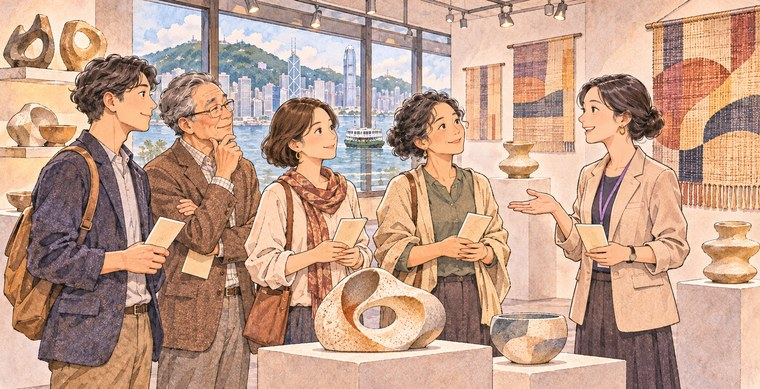

HSP-20 · 香港 · 10–15分鐘 · 團體體驗 · 參觀動機 · 以同意為前提的服務設計
一項預訂，幾種不同的參觀體驗？

一起聽簡介，之後可以各自探索
M+在介紹2025年11月至同年12月的Dream Rooms Community Day時，提到參加者會先聽簡介，再按自己的步調自行參觀。那是為社會服務機構而設的活動，並非下文的私人參觀套票。個案中的四名成年朋友、展館、收費和時間安排均屬虛構；本個案不提供M+預訂。
課堂決定
香港一家虛構設計展館的接待員，正在為四名成年朋友籌備一場九十分鐘的私人參觀。籌辦人代表全組預訂並付款，希望「大家一起度過一次難忘的參觀」。套票有兩種同價安排：全組沿同一路線接受導賞，或經同意後分組參觀，再會合。接待員和另一名受過訓練的導賞員的酬金均已支付，兩種安排都可由他們負責。兩條路線均安全、符合無障礙要求，也不超出展館的接待上限。個別無障礙需要可私下商討，所需支援不另收費。
U讓四人全程同行：先用十分鐘迎賓，再一起參觀六十分鐘，最後用二十分鐘交流。P採用相同的迎賓安排，之後按商定的興趣分組，兩組各有三十分鐘同步參觀，再用十分鐘會合，最後一起參觀和交流四十分鐘。無論採用哪種安排，每人都有九十分鐘。兩段三十分鐘的行程同時進行，並非先後進行。P的分組並非必須，須徵得所有人同意；不會讓任何人獨自留下，也不會把任何人視為團體的負擔。
U讓全組沿着同一條敘事脈絡參觀，所需協調較少。P較能照顧不同興趣，但要預留時間會合，全組共處的時間也較少。接待員尚未問另外三名訪客希望怎樣參觀。籌辦人付了款，不代表接待員可以揣測其他人的偏好。建議路線之前，先請每人說出一項最重視的事、一項顧慮，以及是否希望全程同行。
| 形式 | 迎賓 | 中段 | 共同收結 |
|---|
| U：全程同行 | 10分鐘 | 一起參觀60分鐘 | 20分鐘 |
| P：分組後會合 | 10分鐘 | 同步參觀30分鐘 + 會合10分鐘 | 40分鐘 |
你的決定你起初會建議U還是P？商定路線前，你會問每位訪客甚麼？請說明全組共處時間與按個人興趣深入參觀之間的取捨，不要把籌辦人的意願當成全組的意願。
第二輪 · 多了一項資料
現在，四人各自說出自己的想法。籌辦人和其中一名朋友希望仔細了解用料和製作技法；另外兩人則想輕鬆地看個大概，並留時間交流展品讓各自聯想到甚麼。四人都重視一起完成最後一段行程，也表示只要路線、帶領人員和會合安排交代清楚，便願意分組三十分鐘。這些都是他們親口表達的本次參觀意願，並非按年齡、職業或外表推斷出來的類別。
採用P時，導賞員可帶兩名重視細節的訪客參觀材料展區，接待員則陪同另外兩人沿較輕鬆的路線參觀。兩組的入場安排、座位和無障礙通行安排均已確認。預留的十分鐘會合時間包括前往指定集合點的路程；集合點有職員駐守。待所有人到齊，才開始四十分鐘的共同收結環節。會合由職員協調，毋須訪客持有手機。如有人未能按安排會合，展館會啟動事先商定的協助程序，不會丟下任何人，也不會倉促展開不安全的搜尋。
U仍然可行：接待員可先作簡短的共同講解，再讓訪客按意願提問，並留一小段時間讓大家安靜觀賞，全組仍然同行。這種安排較難持續深入探討專門內容，但能讓大家有更多連貫的共同體驗。無論商定採用哪種形式，都不會有額外收費，也不會失去任何已承諾的安排或權利。訪客可以改變主意；職員會解釋時間安排有何調整，並徵得同意，而不是強行分組或縮短已付費的參觀時間。沒有證據顯示某一種形式能為所有團體帶來較高的滿意度評分。
你的決定知道四人的偏好後，你會建議U還是P？請說明每對訪客商定後會有怎樣的體驗，核對九十分鐘的時間安排，並解釋如何安排會合，以及有人改變主意時會怎樣處理。
同一項預訂，不等於同一種體驗
付款可由一人安排，但同行的幾個人可以各有不同目的。應該主動詢問，而不是把訪客歸類。四人表明的意願說明分組是合理選項之一，但不是非分組不可。共處時間本身也可能有價值；接待員應把取捨說清楚，而不是盡量增加參觀的展品數目。
同步進行，時間不會加倍
U需時10 + 60 + 20 = 90分鐘。P每人需時10 + 30 + 10 + 40 = 90分鐘。兩條三十分鐘的路線由兩名已獲支付酬金的職員分別帶領，同時進行。不要把兩段相加，當成實際經過了六十分鐘，也不要不作交代便取消預留的會合時間。分組讓訪客可以深入了解專門內容，代價是不能全程同行，而不是延長參觀時間。
把會合納入服務安排
分組前，先商定有職員駐守的集合地點、會合時間、路線和協助方案。會合由職員協調，不取決於訪客有沒有手機。須確保無障礙通行、保留休息安排，並尊重訪客的同意。如有人改變主意，應解釋可行的修訂時間表並徵得同意，同時保障已付費的參觀時間和原有承諾。行程設計再巧妙，若訪客沒有把握能順利會合，安排便告失敗。
教師說明
這四名訪客親口表達的偏好和同意，為採用P提供了依據；但如果他們認為全程同行更重要，U仍是合理選擇。不要根據人口特徵推斷參觀動機，也不要用整體人口的平均情況預測這一組人的表現。倫敦動物園的研究是在特定情境下進行的觀察研究，並非對本套票作因果檢驗。M+和Smithsonian的資料展示了不同的參與方式，並不表示可以沿用其活動條款。HSP-09探討活動參加者之間的互動；本個案則探討如何在同一項預訂中協調不同的參觀目的。
第二輪
現在，四人各自說出自己的想法。籌辦人和其中一名朋友希望仔細了解用料和製作技法；另外兩人則想輕鬆地看個大概，並留時間交流展品讓各自聯想到甚麼。四人都重視一起完成最後一段行程，也表示只要路線、帶領人員和會合安排交代清楚，便願意分組三十分鐘。這些都是他們親口表達的本次參觀意願，並非按年齡、職業或外表推斷出來的類別。
採用P時，導賞員可帶兩名重視細節的訪客參觀材料展區，接待員則陪同另外兩人沿較輕鬆的路線參觀。兩組的入場安排、座位和無障礙通行安排均已確認。預留的十分鐘會合時間包括前往指定集合點的路程；集合點有職員駐守。待所有人到齊，才開始四十分鐘的共同收結環節。會合由職員協調，毋須訪客持有手機。如有人未能按安排會合，展館會啟動事先商定的協助程序，不會丟下任何人，也不會倉促展開不安全的搜尋。
U仍然可行：接待員可先作簡短的共同講解，再讓訪客按意願提問，並留一小段時間讓大家安靜觀賞，全組仍然同行。這種安排較難持續深入探討專門內容，但能讓大家有更多連貫的共同體驗。無論商定採用哪種形式，都不會有額外收費，也不會失去任何已承諾的安排或權利。訪客可以改變主意；職員會解釋時間安排有何調整，並徵得同意，而不是強行分組或縮短已付費的參觀時間。沒有證據顯示某一種形式能為所有團體帶來較高的滿意度評分。
你的決定知道四人的偏好後，你會建議U還是P？請說明每對訪客商定後會有怎樣的體驗，核對九十分鐘的時間安排，並解釋如何安排會合，以及有人改變主意時會怎樣處理。